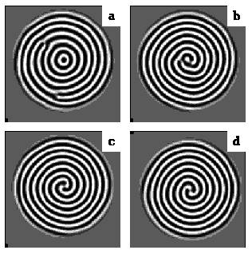

Spirals and Targets in Faraday experiment
(simulations of the complex order-parameter model)

(time evolution of a target with two dislocations. Dislocations are attracted to the core and form two-arm spiral)